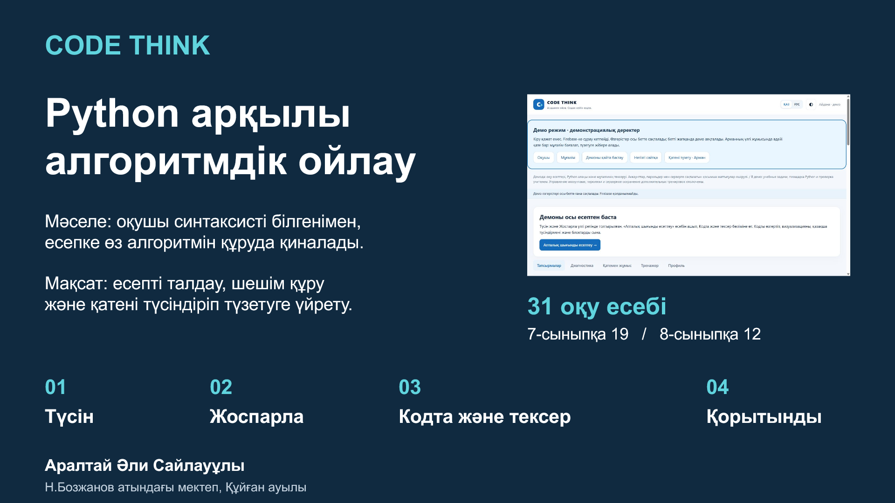
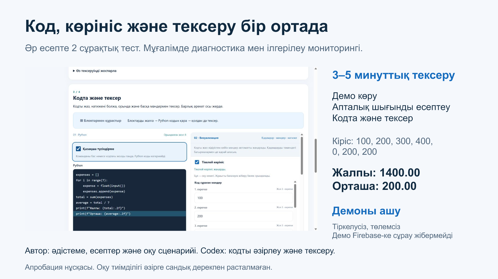

<!doctype html><html lang="kk"><meta charset="utf-8"><meta name="viewport" content="width=device-width,initial-scale=1"><title>CODE THINK екі слайдтық таныстырылым</title><style>body{margin:0;background:#102a40;color:white;font:17px Arial}main{max-width:1280px;margin:auto}img{width:100%;height:auto;display:block}nav{padding:20px}a{color:#60d4de;margin-right:24px}figure{margin:0 0 30px}figcaption{padding:10px 20px}</style><main><nav><a href="CODE_THINK_2_SLIDES.pdf">Екі слайдтық PDF</a><a href="CODE_THINK_2_SLIDES.pptx">PowerPoint жүктеу</a><a href="../demo.html?release=12.10.0">Жұмыс істейтін демо</a><a href="guide.html">Нұсқаулық</a></nav><figure><figcaption>1 / 2</figcaption></figure><figure><figcaption>2 / 2</figcaption></figure></main></html>